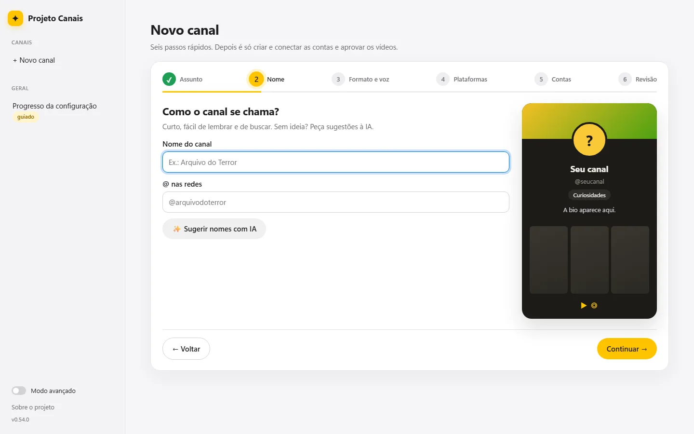
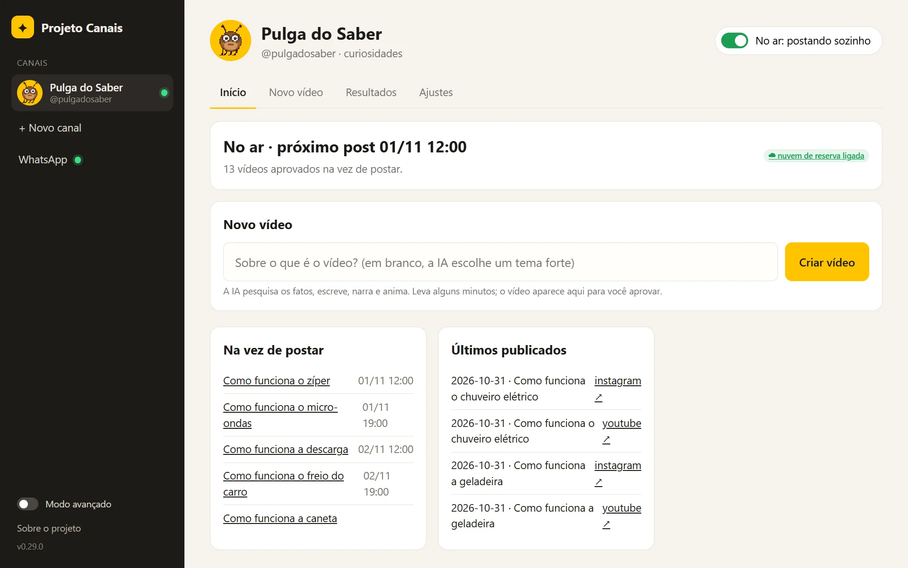

Pesquisa com demanda comprovada.
Mapeia o que o público procura e os vídeos que passaram muito da média do próprio canal. Estuda o porquê, nunca copia o texto.
Código aberto · roda no seu computador
Pesquisa o que já dá certo, escreve o roteiro com fontes, narra, anima e posta no YouTube e no Instagram nos horários marcados. Você só aprova.

Como funciona
Mapeia o que o público procura e os vídeos que passaram muito da média do próprio canal. Estuda o porquê, nunca copia o texto.
O Claude Code escreve com gancho, ponto de vista e os links de cada afirmação. Uma checagem barra texto com cara de IA.
Vozes grátis no PC ou na nuvem, ou a sua própria voz.
Legenda que acende a palavra, cenas 3D e números que contam, quadro a quadro.
n8n no PC ou GitHub Actions na nuvem, só o que você aprovou.
O Estúdio
Crie um canal em 6 passos, peça vídeos em uma linha, assista às prévias e aprove. Ele lê os números e os comentários e melhora os próximos vídeos com o que funcionou.

Acha o que o público quer ver e confere os fatos em fontes.
Roteiro, narração, animação, legenda e música livre.
Você assiste à prévia e só o que aprovar é publicado.
Clone o repositório, abra a pasta no seu agente de IA (Claude Code, Codex, Gemini CLI, Cursor) e peça para configurar. Python, Node.js, n8n e o resto se instalam sozinhos; com você ficam só as contas e as chaves.
O Projeto Canais é um projeto acadêmico da disciplina Tópicos Especiais em Programação. Ele publica só pelas APIs oficiais (YouTube Data API e Instagram Graph API), só nos canais que a própria pessoa conectou e só o que ela aprovou.